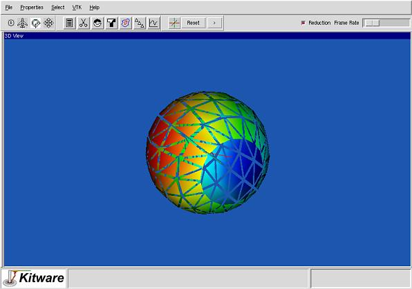

Prev
Up
Step 12
To hide the properties menu, choose "Hide Properties" from the Properties menu. You can un-hide the properties menu back by choosing one of Source, Animation or View from the Properties menu.

Prev
Up
Last modified: Mon Oct 22 16:14:13 EDT 2001